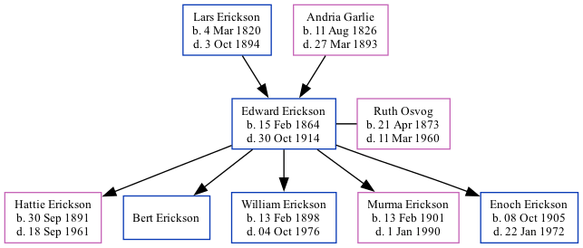

Edward L Erickson 1864 - 1914
[ Home ] | [ Surnames Index ] | [ Family History ]The child of Lars Erickson and Andria Garlie, , Edward was the great-great-grandfather of Stephanie Hardesty (née Teten), was born in Manitowoc County, Wisconsin on Feb 15, 18641,2,3,4,5,6 and married Ruth Osvog (with whom he had 5 children: Hattie M, Bert E, William Carad, Murma Olivia and Enoch N) in 18927.
During his life, he was living in Decorah, Winneshiek, Iowa, USA in 18701; in Cato Falls, Manitowoc, Wisconsin, USA in 18802; in Palestine, Story, Iowa in 19003; in Canton, Lincoln, South Dakota in 19104; in Estherville, Emmet, Iowa on Jan 1, 19255; and in Decorah, Winneshiek, Iowa1.
He died on Oct 30, 1914 in Grant County, South Dakota6 (age at Death: 50) and was buried in Manitowoc County, Wisconsin, USA after Oct 30, 19146.
Parents
- Lars was born on Mar 4, 1820
- Andria Tidemansdatter Leren was born on Aug 11, 1826
Children
- Hattie M was born on Sep 30, 1891
- Bert E
- William Carad was born on Feb 13, 1898
- Murma Olivia was born on Feb 13, 1901
- Enoch N was born on Oct 8, 1905
Citations
- 1870 United States Federal Census Ancestry.com Operations, Inc. (Age in 1870: 6)
- 1880 United States Federal Census Ancestry.com Operations Inc (Age: 16; Marital Status: Single; Relation to Head of House: Son)
- 1900 United States Federal Census Ancestry.com Operations Inc (Age: 35; Marital Status: Married; Relation to Head of House: Head)
- 1910 United States Federal Census Ancestry.com Operations Inc (Age in 1910: 45; Marital Status: Married; Relation to Head of House: Self; Relation to Head of House: Head)
- Iowa, State Census Collection, 1836-1925 Ancestry.com Operations Inc (Marital Status: Married; Relation to Head: Head)
- Web: Wisconsin, Find A Grave Index, 1836-2011 Ancestry.com Operations, Inc.
- 1900 United States Federal Census Ancestry.com Operations Inc
Family Tree
Data (GEDCOM) maintained by Jay Weston Hannah, Omaha, Nebraska, USA.
Website generated by ged2site. Last updated on Jun 18, 2024.